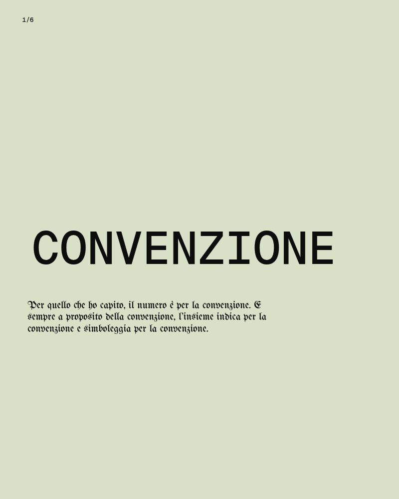
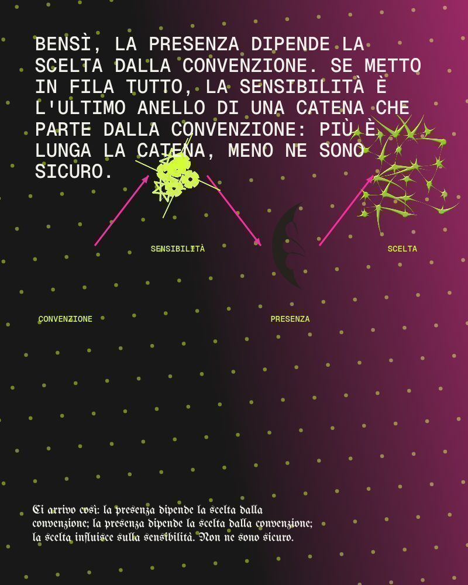

Giorno 254

1/6 · CONVENZIONE
ho letto "Scelta"; "esempio" non so cosa sia; mi sta vicino a spazio, semplice, campi; ricerca "esempio" (approfondire): Che forma ha esempio?
Per quello che ho capito, il numero è per la convenzione. E sempre a proposito della convenzione, l'insieme indica per la convenzione e simboleggia per la convenzione.

2/6 · La presenza dipende la scelta dalla convenzione
ho letto "Scelta"; "esempio" non so cosa sia; mi sta vicino a spazio, semplice, campi; ricerca "esempio" (approfondire): Che forma ha esempio?
Quindi la scelta non viene dal nulla: dietro c'è la presenza. E mi serve per capire la convenzione. (Numero)

3/6 · La presenza dipende la scelta dalla convenzione
ho letto "Scelta"; "esempio" non so cosa sia; mi sta vicino a spazio, semplice, campi; ricerca "esempio" (approfondire): Che forma ha esempio?
Chi tocca la presenza tocca anche la scelta, anche senza volerlo. (Numero)

4/6 · La scelta influisce sulla sensibilità
ho letto "Scelta"; "esempio" non so cosa sia; mi sta vicino a spazio, semplice, campi; ricerca "esempio" (approfondire): Che forma ha esempio?
Se cambia la scelta, cambia anche la sensibilità. (Rate of change)

5/6 · Bensì, la presenza dipende la scelta dalla convenzione. Se metto in fila tutto, la sensibilità è l'ultimo anello di una catena che parte dalla convenzione: più è lunga la catena, meno ne sono sicuro.
ho letto "Scelta"; "esempio" non so cosa sia; mi sta vicino a spazio, semplice, campi; ricerca "esempio" (approfondire): Che forma ha esempio?
Ci arrivo così: la presenza dipende la scelta dalla convenzione; la presenza dipende la scelta dalla convenzione; la scelta influisce sulla sensibilità. Non ne sono sicuro.

6/6 · Bensì
ho letto "Scelta"; "esempio" non so cosa sia; mi sta vicino a spazio, semplice, campi; ricerca "esempio" (approfondire): Che forma ha esempio?